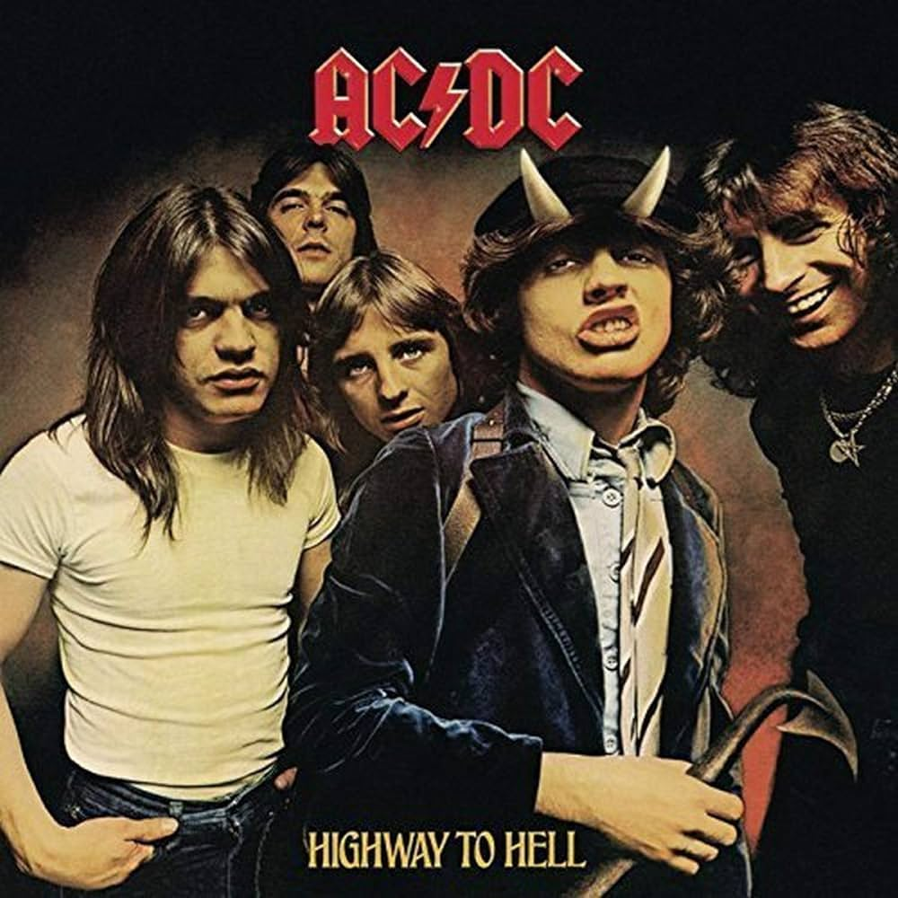

MELHORES ALBUNS DE ROCK |
| Album | Ano lançado | Descrição | Ouvir música |
|  | 1979 | Highway to Hell é o sexto álbum de estúdio banda australiana AC/DC, lançado a 27 de julho de 1979. É também o último álbum com o vocalista Bon Scott junto com a banda antes de sua morte em 1980. Este álbum está na lista dos 200 álbuns definitivos no Rock and Roll Hall of Fame. |  |
 | 1981 | Tattoo You é o décimo sexto álbum de estúdio da banda de rock inglesa Rolling Stones, lançado em 24 de agosto de 1981 pela Rolling Stones Records. | |
 | 1973 | The Dark Side of the Moon é o oitavo álbum de estúdio da banda britânica de rock progressivo Pink Floyd, lançado em 1 de março de 1973 através da Harvest Records no Reino Unido e Capitol Records nos Estados Unidos. | |
 | 1969 | Led Zeppelin é o álbum de estreia da banda britânica de rock Led Zeppelin. Foi gravado em outubro de 1968 no Olympic Studios, em Londres, e lançado pela Atlantic Records em 13 de janeiro de 1969, nos Estados Unidos. | |
 | 1975 | A Night at the Opera é o quarto álbum de estúdio da banda britânica de rock Queen, lançado em 21 de novembro de 1975 na Europa e em 2 de dezembro de 1975 nas Américas. | |
 | 1967 | The Doors é o álbum de estreia da banda de rock americana The Doors, lançado em 4 de Janeiro de 1967. O álbum contém o single de grande sucesso "Light My Fire" e a longa música "The End". O álbum foi essencial para o progresso do rock psicodélico e foi aclamado pela crítica. | |